SD-00: Service Desk Foundation Setup
I prepared the ServiceNow and Active Directory support foundation for my troubleshooting ticket labs, including a Service Desk dashboard, realistic users, resolver accounts, resolver groups, delegated first-line account support permissions, and clear incident categories and subcategories for future tickets.
Overview
In this setup lab, I created the operational layer needed for a realistic first-line Service Desk workflow. The aim was to keep infrastructure build evidence separate from support evidence, so the later TS ticket labs can focus on triage, investigation, escalation, validation and resolution.
This lab prepares the environment for ServiceNow-based troubleshooting tickets covering Active Directory, Windows, Microsoft 365, Outlook, Teams, OneDrive, VPN, printer, file access, security, request/admin and escalation scenarios.
Objective
The objective was to create a safe support model where Service Desk analysts can work normal user-account incidents without using Domain Admin privileges. The model delegates routine first-line actions to a dedicated group while keeping IT/admin accounts, service accounts, groups and infrastructure objects outside the delegated scope. I also cleaned up the ServiceNow incident categories and subcategories, then added resolver groups so future tickets can show realistic first-line ownership, escalation and specialist routing.
Environment
| Component | Value |
|---|---|
| Company | Nietz Ltd |
| AD Domain | corp.nietz.co.uk |
| NetBIOS Name | CORP |
| Domain Controller | DC1 |
| Domain Client | CL1 |
| ServiceNow Instance | dev397794.service-now.com |
| ServiceNow Dashboard | Nietz Ltd Service Desk Dashboard |
| ServiceNow Resolver Groups | Service Desk, Second Line Support, Infrastructure Support, Network Support, Security Support |
| AD Delegation Group | GG_ServiceDesk_L1 |
Configuration
1. ServiceNow Dashboard
I created a dedicated ServiceNow dashboard for the troubleshooting ticket series. The dashboard provides a single workspace for first-line support queues, open incidents, unassigned incidents, high-priority work and recently resolved tickets.
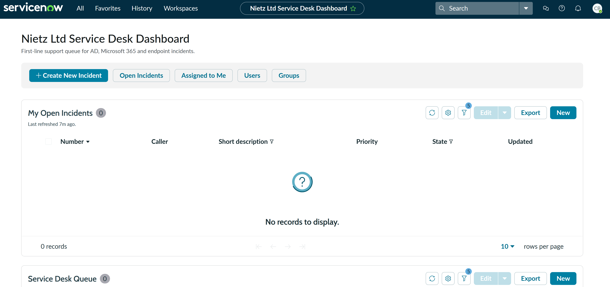
2. ServiceNow Users
I created the ServiceNow users needed for the support workflow, including first-line analysts, an escalation/admin resolver, and business callers from HR, Finance, Sales and Management.
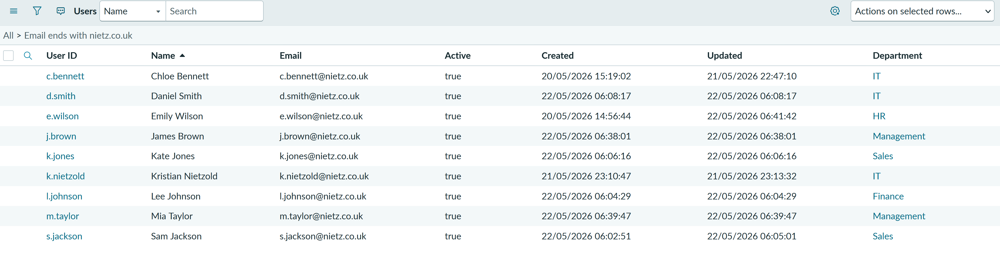
3. Active Directory Service Desk Group
I created a dedicated Active Directory security group called GG_ServiceDesk_L1 for delegated first-line support permissions. Chloe Bennett and Daniel Smith were added as the Service Desk analysts.
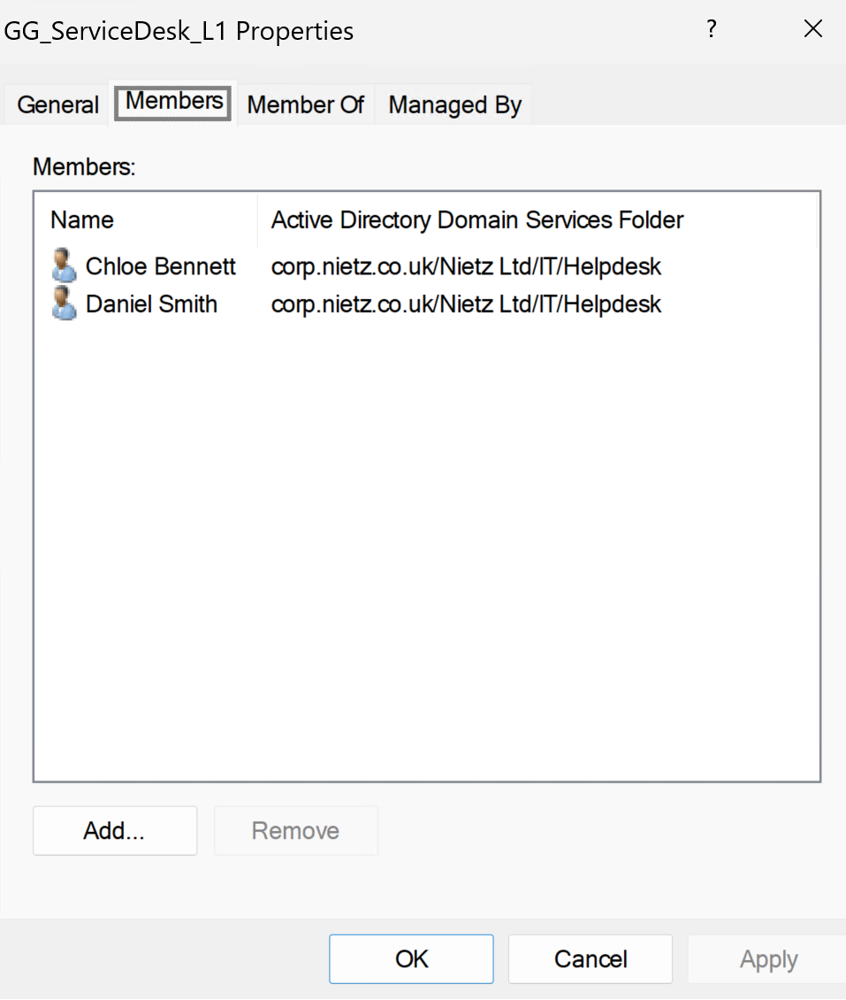
4. Password Reset Delegation
I delegated password reset, forced password change at next logon, and read-only user information permissions to GG_ServiceDesk_L1 for normal business-user OUs.
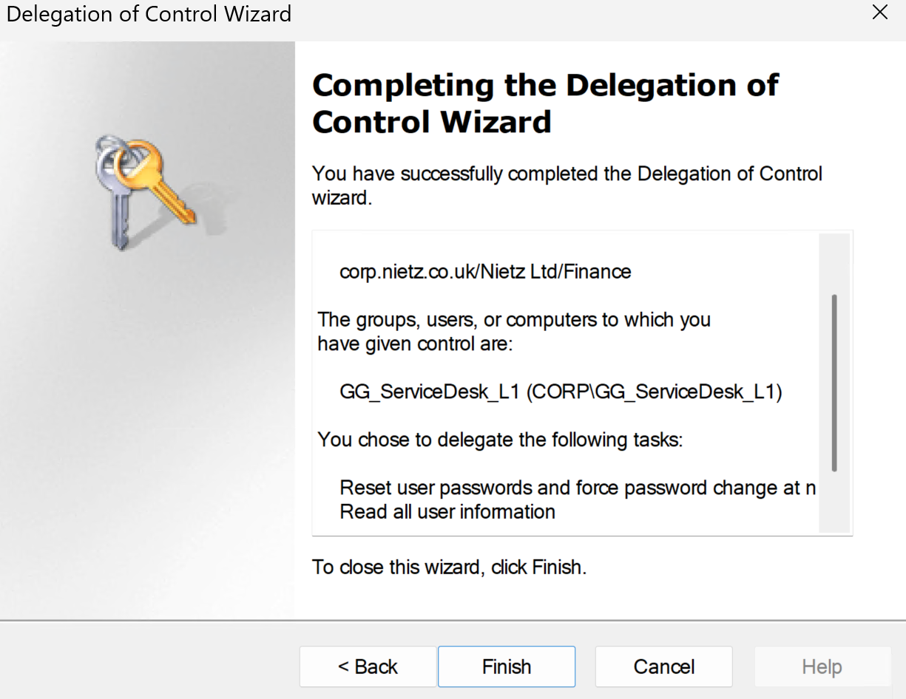
5. Account Unlock Delegation
I also delegated account unlock capability by granting the Service Desk group permission to read and write the lockoutTime attribute on user objects in the normal business-user OUs.
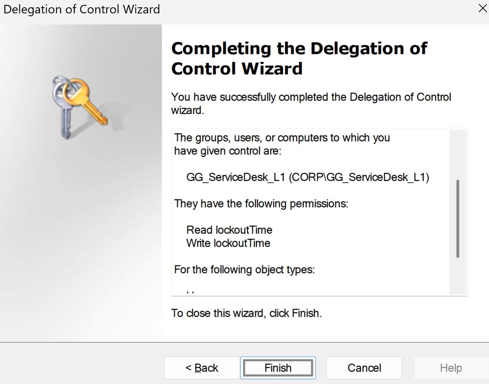
lockoutTime attribute.6. Incident Categories
I updated the ServiceNow incident category choices to better match a realistic Microsoft-focused Service Desk queue. The active categories now cover Microsoft 365, account/access, operating system, hardware, network, printing, application, security, request/admin and inquiry/help scenarios.
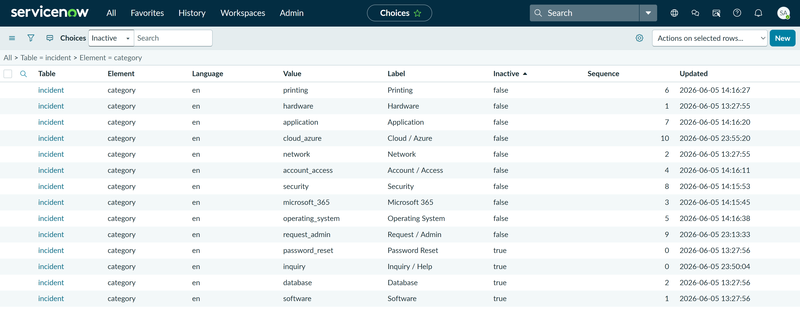
7. Microsoft 365 Subcategories
I configured Microsoft 365 subcategories for the most common cloud productivity support areas: Exchange Online, Outlook, Teams, SharePoint, OneDrive, Licensing, MFA, Entra ID and Microsoft Office Apps.
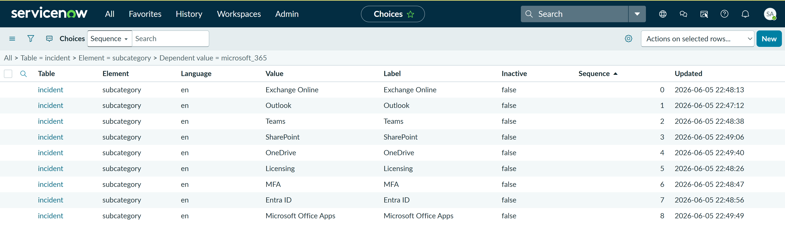
8. Cloud / Azure Subcategories
I added Cloud / Azure subcategories for common junior-support and escalation scenarios, including virtual machines, storage, networking, identity/RBAC, cost/subscription, backup/recovery and monitoring.
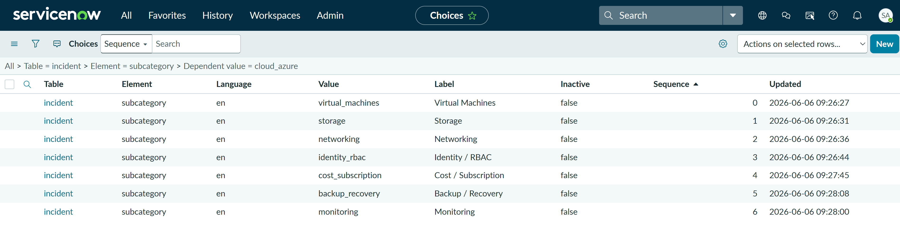
9. Resolver Groups and Escalation Model
I created dedicated ServiceNow resolver groups so tickets can show realistic routing when first-line support reaches a permissions boundary or needs specialist investigation.
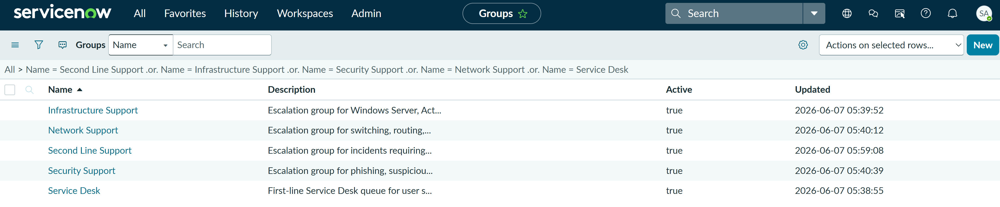
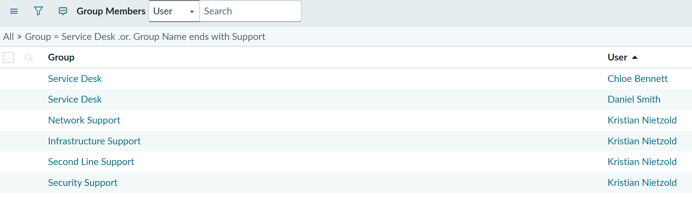
Populated ServiceNow Queue
After the Service Desk foundation was configured, the incident queue was populated with realistic Microsoft support scenarios. This validates the caller, resolver, priority, assignment and ticket-state model used across the Service Desk portfolio.
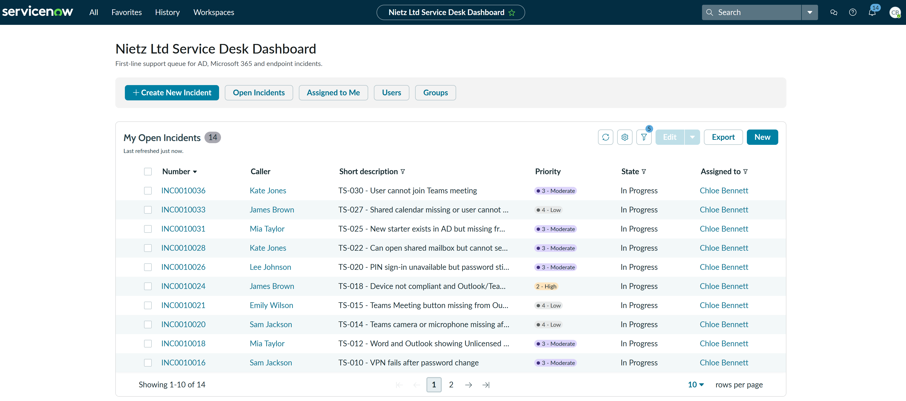
Complete Incident Classification Reference
The main screenshot shows the active Incident categories that were configured. I captured separate Microsoft 365 and Cloud / Azure subcategory screenshots because these areas are important for the troubleshooting ticket series. The remaining subcategories are documented below so the page still explains the full setup without needing a screenshot for every category.
| Category | Subcategories configured | Typical use |
|---|---|---|
| Microsoft 365 | Exchange Online, Outlook, Teams, SharePoint, OneDrive, Licensing, MFA, Entra ID, Microsoft Office Apps | Microsoft cloud productivity, mailbox, collaboration, identity and licensing issues. |
| Cloud / Azure | Virtual Machines, Storage, Networking, Identity / RBAC, Cost / Subscription, Backup / Recovery, Monitoring | Azure resource, access, subscription, monitoring and cloud escalation scenarios. |
| Account / Access | Password Reset, Account Locked, Active Directory, Group Membership, File Share Access, User Permissions, New Starter, Leaver, Account Disabled | AD account support, access troubleshooting, group membership and user lifecycle tasks. |
| Operating System | Windows Login, Windows Profile, Windows Update, BitLocker, Performance, Blue Screen / Crash, Software Installation, Local Settings | Windows endpoint, sign-in, profile, update, encryption and local device issues. |
| Hardware | Laptop, Desktop, Monitor, Docking Station, Keyboard / Mouse, Peripheral, Device Fault, Build / Replacement | Physical device faults, user equipment problems and device replacement/build requests. |
| Network | DHCP, DNS, IP Address, VPN, Wireless, Internet Access, Network Drive, Connectivity, Remote Access | Connectivity, VPN, DNS/DHCP, mapped drive and remote access issues. |
| Printing | Printer Access, Printer Mapping, Print Queue, Printer Driver, Default Printer, MFD / Scanner | Printer access, printer setup, stuck print jobs, drivers, default printer and scanner issues. |
| Application | Business Application, Browser, PDF Reader, Finance Application, CRM, Line-of-Business App, Install / Update | Non-Microsoft-365 application faults, installs, updates and business app access issues. |
| Security | Phishing, Malware, Suspicious Login, Compromised Account, Security Alert, MFA Risk, Data Loss | Security incidents, suspicious sign-ins, compromised accounts and user-reported risks. |
| Request / Admin | Access Request, Software Request, Hardware Request, Change Request, Information Request, Procurement, General Admin | Requests where nothing is broken, such as access, software, hardware or information requests. |
| Inquiry / Help | How To, General Question, Status Update, Known Issue, User Guidance, Other | General guidance, how-to support, known issue checks and ticket status queries. |
Service Desk Role Model
This table defines who is used in the ticket labs and what each account represents. The aim is to make later incidents easier to follow by separating callers, first-line resolvers and the senior lab escalation resolver. The role model distinguishes responsibilities within the simulated environment.
| User | Role | Purpose |
|---|---|---|
| Chloe Bennett | Service Desk Analyst | Main first-line analyst for ticket handling and user support. |
| Daniel Smith | IT Support Technician | Secondary first-line resolver for support tickets. |
| Kristian Nietzold | Escalation Resolver / Lab Administrator | Senior lab resolver used for actions outside first-line permissions and for specialist escalation groups. |
| Emily Wilson | HR Assistant | Business caller for HR/account support scenarios. |
| Lee Johnson | Finance Assistant | Business caller for Finance access and VPN scenarios. |
| Kate Jones and Sam Jackson | Sales users | Business callers for sales, Outlook, Teams and shared mailbox scenarios. |
| James Brown and Mia Taylor | Management users | Business callers for management, onboarding, device and escalation scenarios. |
Resolver Group Routing
The ServiceNow resolver groups define where a ticket should be routed after first-line triage. This gives the ticket labs a simple but realistic escalation model without creating too many specialist teams too early.
| Assignment group | Members used in lab | Typical use |
|---|---|---|
| Service Desk | Chloe Bennett, Daniel Smith | First-line ownership, triage, routine fixes, user updates and standard ticket resolution. |
| Second Line Support | Kristian Nietzold | General escalation where first-line lacks permissions or deeper troubleshooting is required. |
| Infrastructure Support | Kristian Nietzold | Active Directory, Group Policy, file shares, print services, Windows Server and core infrastructure issues. |
| Network Support | Kristian Nietzold | Switching, routing, VLANs, wireless, VPN, firewall and site connectivity issues. |
| Security Support | Kristian Nietzold | Phishing, suspicious sign-ins, compromised accounts, malware alerts and security-risk incidents. |
Delegated Scope
The Service Desk delegation was applied only to normal business-user areas. Privileged areas such as IT/admin accounts, service accounts, groups and domain infrastructure were deliberately kept out of scope so first-line analysts can handle routine account issues without receiving unnecessary administrative access.
| Area | Delegated to Service Desk? | Reason |
|---|---|---|
| HR OU | Yes | Normal business-user accounts. |
| Finance OU | Yes | Normal business-user accounts. |
| Sales OU | Yes | Normal business-user accounts. |
| Management OU | Yes | Normal business-user accounts. |
| IT / Helpdesk accounts | No / restricted | Contains support and admin-style accounts. |
| Groups OU | No | Group membership changes require approval or escalation. |
| Service accounts | No | Privileged or non-user accounts. |
| Domain Controllers / infrastructure | No | Infrastructure-sensitive objects remain admin-only. |
Validation
The setup was validated by confirming that the ServiceNow dashboard was available, the Nietz Ltd users were present and active, the Active Directory Service Desk delegation group contained the correct first-line analysts, the Delegation of Control Wizard applied the required password reset, read-user-information and account unlock permissions, the ServiceNow Choice List contained the updated incident categories and Microsoft 365 / Cloud Azure subcategories, and the ServiceNow resolver groups had the expected memberships.
Key Technical Outcomes
This lab demonstrated how to prepare a realistic support operating layer on top of a Microsoft lab environment. It showed the difference between resource-access groups and delegated administration groups, created a safer model where first-line analysts can support normal users without broad domain administrator permissions, and configured ServiceNow so incidents can be categorised consistently across Microsoft 365, access, Windows, network, printing, application, security and request workflows.
The setup also creates a clear escalation boundary: Chloe and Daniel can handle routine first-line account support, while higher-risk or higher-permission actions can be escalated to Kristian as the senior lab resolver through Second Line, Infrastructure, Network or Security Support queues.
Summary
- I created a clean ServiceNow dashboard for the troubleshooting ticket series.
- I created ServiceNow caller and resolver users for realistic ticket workflows.
- I configured realistic Incident categories and Microsoft 365 / Cloud Azure subcategories in the ServiceNow Choice List.
- I created ServiceNow resolver groups for Service Desk, Second Line, Infrastructure, Network and Security escalation paths.
- I mapped Chloe and Daniel to Service Desk and Kristian to the specialist escalation groups.
- I made old duplicate/default categories inactive where they no longer fit the Service Desk model.
- I created
GG_ServiceDesk_L1as a dedicated AD Service Desk delegation group. - I added Chloe Bennett and Daniel Smith as first-line Service Desk members.
- I delegated password reset, force password change, read user information and account unlock rights to normal business-user OUs.
- I deliberately excluded privileged areas such as IT/admin accounts, service accounts, groups and domain controller objects.